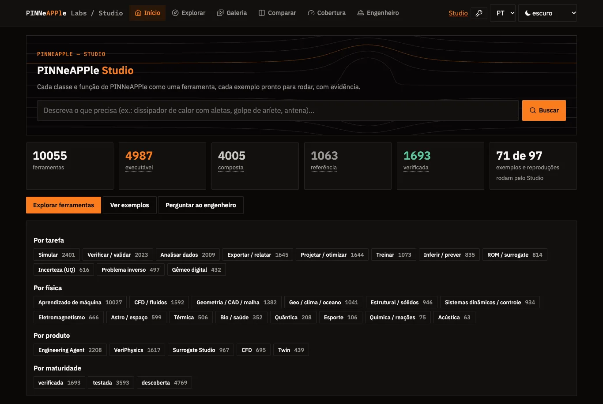

Surrogate model
Answer in seconds, not days
A simulation you already ran becomes a model that answers on the spot. It exists to answer “what if?” without paying for one simulation per question.
on the heat sink: ~200,000× faster, at 4.46% mean error
The product · launching in 2027
You write the engineering problem in plain language. The platform says whether it covers it, checks what has been proven, runs it and returns the result with a report and evidence. Launching in 2027.
The first button opens the early-access form: three questions, and the invite goes out in 2027. The second opens WhatsApp with the message ready.

What it is
Most simulation tools hand back a colourful field and leave the interpretation to you. Studio goes the other way: it starts from the request, written in plain language, and ends in a report that says what was done, what was checked, and what has not been proven yet.
Underneath sits PINNeAPPle's open library: every tool is a real function, with a signature, units, a validity range and a test history. The platform does not invent capability: it finds what exists, checks whether your case fits, and runs it in an isolated environment.
Counts read from the Studio in its current version, the same ones the coverage screen shows, taken from the code and the recorded runs.
From request to report
Four stages between the written sentence and the signed report. None of them asks you to build a simulation case.
One sentence is enough: “finned heat sink for 60 W”. The platform structures the request and shows what already exists for it.
Four possible answers: it covers and runs; a value is missing (and it asks only for that); it covers in part (and says what would have to change); or it does not cover (and says why).
Your numbers are compared with the range in which that tool was validated. Outside the range, the result is not presented as if it held.
With the checks that ran, the ones that did not, the code version, the time and memory spent, and the hash of every file.
Five pipelines the base has already produced, each with a full article: the car in 3D CFD, the rover learning the soil, the twin inside Unity, the evolutionary search over brick builds and the 1997 El Niño.
What you will be able to do
Each with an example that has already run on the open base. This is what the product puts in front of someone who is not a numerical-method specialist.
Surrogate model
A simulation you already ran becomes a model that answers on the spot. It exists to answer “what if?” without paying for one simulation per question.
on the heat sink: ~200,000× faster, at 4.46% mean error
Digital twin
The model walks beside live data, with the error stated, and warns before a limit is crossed.
on HX-201: 0.216 °C error and an alarm 2.6 h ahead
Design optimization
Thousands of geometries evaluated against objectives that fight each other, with the trade-off map instead of a single answer.
across 1,920 wings: −13% CO₂ per passenger-kilometre
Verification
The result is measured against the physics, the experiment or the standard, never against itself. What was not checked shows as not checked.
caught a residual 100× over the limit on an already-trained model
CFD
Geometry, mesh, solver, post-processing and the comparison against the reference, in one session.
erosion in a 90° bend: 1.05–1.49× the published experiment
Fast sizing
A closed-form calculation for the case at hand: heat sink, board, part. Seconds instead of hours, against a published correlation.
heat sink: 0–5% against the literature
Why it can be trusted

In and out
The same list serves both sides: if what you have does not cover what goes in, the platform says so before running.
The product inside
No mockups: these are captures of the application under development, with data from a real run.


See it running
This is a recording of the application, with captions: the search, the choice of tool, the run, and the answer coming back with the checks. Nothing staged. The solver wait was cut out. The black cut in the middle marks where.
Two more apps from the base
The Studio executes the library's tools. These two clips are base apps running: thermal sizing and simulation preflight.
Current state, no marketing
The platform is built in modules. Saying what is ready is more honest than pretending it all arrived together.
| Module | What it does | When |
|---|---|---|
| Studio and catalogue | Search, filters, execution of base tools, report and evidence | runs today |
| Engineer (intake) | Request in text, clarifying questions and an approvable plan | runs today |
| CFD / Solvers | Full case with an external solver and comparison against a reference | in 2027 |
| VeriPhysics | Physics, convergence and coverage checks over models and results | in 2027 |
| Surrogate Factory | Surrogate training with a stated validity domain | in 2027 |
| PINNeAPPle Twin | Asset replay with alarms and stated error, then live telemetry | in 2027 |
The talk
The talk we gave at the SIMR event: the written request, the search, the run and the report, without cuts in between. It is the fastest way to see what PINNeAPPle Studio does.
Early access
The Studio opens in 2027, in a closed preview. Whoever joins the list gets the invite first, in sign-up order, and helps decide what ships first.
The e-mail is used for the early-access invite only. No spam, and one click to leave.